软件的生命周期
- 软件产品从形成概念开始，经过开发、使用和维护，直到最后退役的全过程。
- 原则：各阶段任务尽可能独立
- 优点：
- “各个击破”、“分而治之”，降低难度
- 便于不同人员分工协作
- 便于在各个阶段采用科学的管理技术
- 便于在各个阶段采用先进的开发方法和技术
- 便于对软件开发工程的全过程的组织和管理
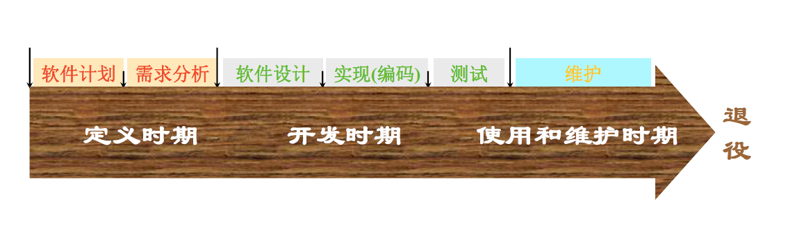
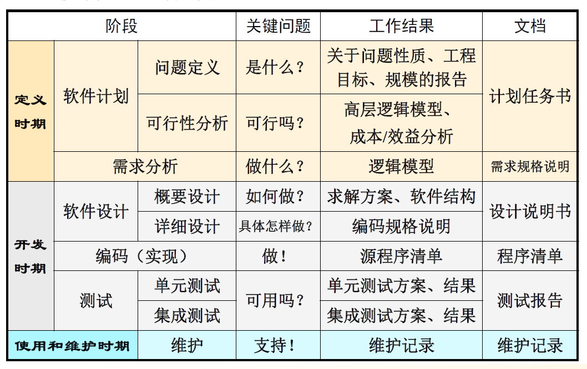
- 特点
- 顺序性、依赖性
- 推迟程序的物理实现
- 质量保证的观点（利于尽早发现错误）：阶段文档、评审
错误的“积累效应”和“放大效应”：
- 大部分的错误是在编码之前造成的
- 错误发现、改正得越晚，需付出的代价越高
软件过程
- 软件开发全部过程、活动和任务的结构框架。
- 普遍适用的框架，而非具体的方法
- 作用
- 描述各阶段关系
- 为软件工程管理提供里程碑和进度表
- 为开发过程提供原则和方法
1. 编码—修正模型（code and fix model）
- 软件开发只有两个阶段
- 编写程序代码
- 修改程序代码
- 作坊式生产方式
- 缺点
- 低估设计，代码结构差，难修改
- 不重视需求，开发风险大，用户不满意
- 难修改、难维护
2. 瀑布模型（Waterfall Model）
- 软件生存周期模型，流水式过程模型
- 有章可循，严谨有序。克服了个体随意性和不规范性的倾向，是摆脱软件危机迈出的重要一步
- 生命周期方法学
- 阶段划分方法— 控制复杂性
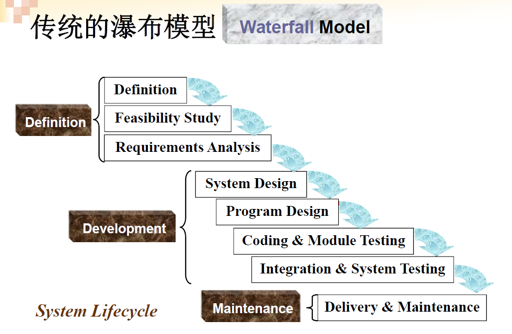
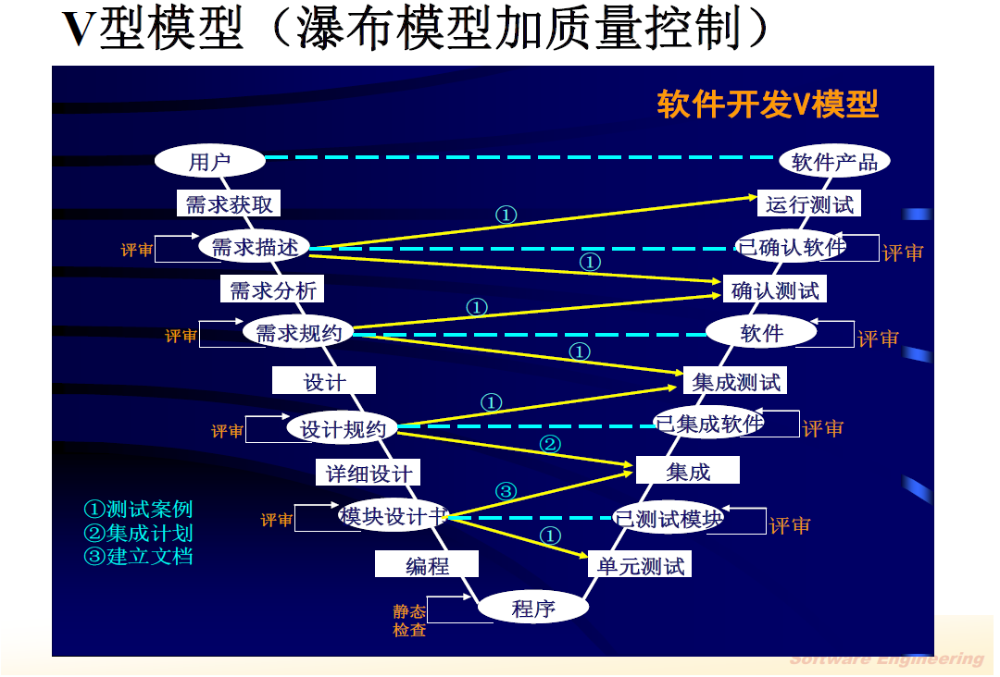
特点：
- 基本思想：“分而治之”
- 优点
- 规范管理开发过程
- 文档驱动
- 缺点
- 初期系统的需求难于完全确定
- 文档驱动
- 周期长
- 适用范围
- 结构化方法，面向过程的软件开发方法
- 需求变化少
- 开发人员熟悉应用领域
- 低风险项目
- 使用环境稳定
3. 原型模型（Prototyping Model）
- 针对：软件开发初期需求难以确定，需求模糊问题。补充和完善
- 工程上经常使用的“原型”
- 快速原型法（Rapid Prototyping）
- 基本思想：快速建立原型，完善用户需求，建立一个完整并经过证实的需求规格说明，然后以此作为正式系统的开发基础。
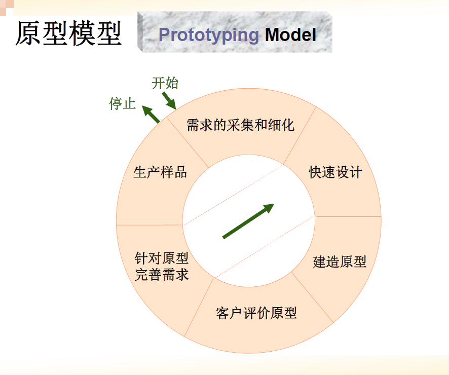
快速开发原型的途径
模拟软件系统的人机界面和人机交互方式
开发工作原型，实现软件系统的部分功能
利用正在运行的类似软件
优点
- 用户参与
- 快速
缺点
- 对开发环境要求高
适用范围
- 已有产品（原型）
- 简单而熟悉的领域
- 有快速原型开发工具
- 进行产品移植或升级
4. 增量模型( Incremental Model )
基本思想：遵循递增方式来进行软件开发
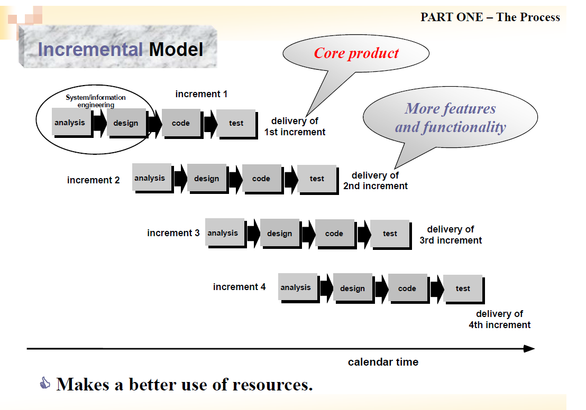
- 优点
- 人员分配灵活
- 能够在较短的时间内向用户提交一些可用的工作产品，能解决用户端一些急用功能
- 每次只提交部分功能，使用户由较充分的时间适应和学习
- 整个系统是由一个个构件集成在一起的，所以适应变更，大大提高了系统的可维护性
- 缺点
- 构件逐渐加入已有系统，对系统的要求比较苛刻（开放系统）
- 需要协调好各增量之间的关系，管理复杂
- 容易退化为边做边改模型，使软件过程的控制失去整体性
- 适用范围
- 在整个项目开发过程中，需求都可能发生变化，客户接受分阶段交付
- 分析设计人员对应用领域不熟悉，难以一步到位
- 中等或高风险项目
- 用户可参与到整个软件开发过程中
- 软件公司自己有较好的类库、构件库
5. 螺旋模型（Spiral Model）
- 针对：前面的模型没有提供“驾驭软件风险”的功能
- 基本思想：降低风险
- 制定计划planning
- 风险分析risk analysis
- 实施工程engineering, construction and release
- 客户评估customer evaluation
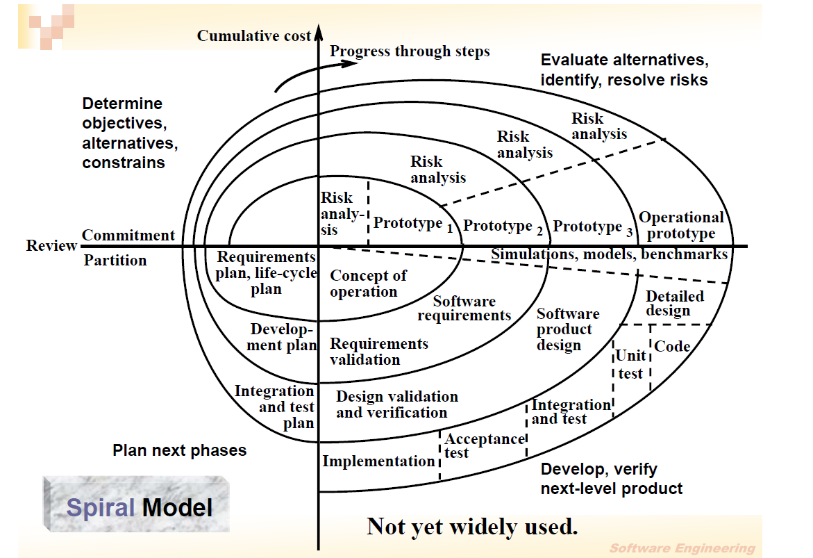
- 优点
- 有利于重用已有的构件
- 以循环的方式逐步加深系统的定义和实现的深度
- 灵活的风险控制，随着迭代的增加，风险程度降低
- 用户参与，使得项目不偏离正确方向
- 良好的沟通和高质量的产品
- 缺点
- 对开发人员要求高
- 用户长期地接受“演化”方法较难
- 适用范围
- 庞大、复杂、高风险的系统
- 内部开发的大规模软件项目
6. 喷泉模型（Fountain Model）
- 面向对象生命周期模型
- 特点
- 迭代
- 无缝
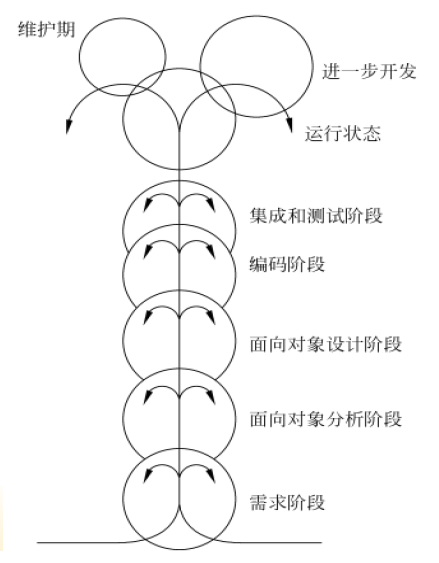
为什么需要软件过程模型
- 明确了软件开发的过程和步骤，促进工程化开发软件
- 为软件开发提供了可视性，便于对软件开发过程进行管理和控制
- 便于细化和安排任务，使得每个人员明确各自的工作
如何选择软件过程模型
- 软件过程模型是不断发展的
- 各种软件过程模型各有优缺点和适用场合
- 选用时不必拘泥于某种模型
- 可组合多种模型
- 也可根据实际创造新的模型
传统的软件工程：数据流图，数据流图映射成模块结构图。
系统流程图
用途
- 描述系统物理模型的传统工具。表达业务在系统各部件之间进行处理的流水账。系统各部件用黑盒子的形式进行描述。理顺和优化业务，分析不足。
- 符号简单明了，是沟通交流的工具。
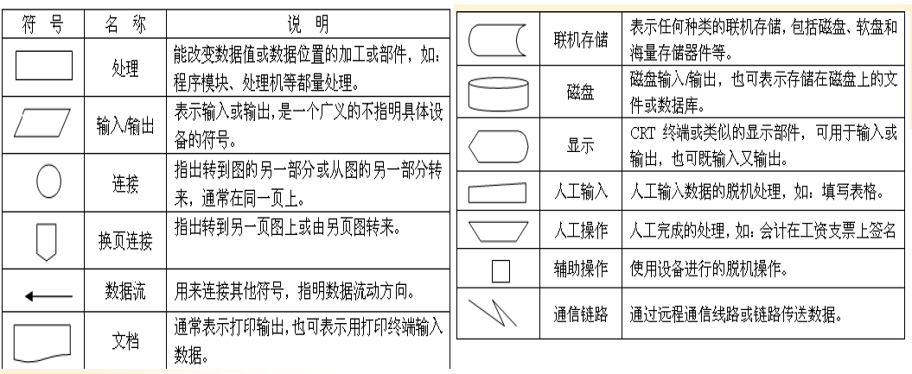
系统流程图不仅可用于可行性研究，还可用于需求分析阶段。
画系统流程图时，首先要搞清业务处理过程，同时要理解系统流程图各个符号的含义，选择相应的符号来代表系统中的各个元素
系统流程图分层：
- 面对复杂系统时，较好的办法是分层次描绘。
- 先绘制高层次系统流程图，描述系统概貌，再对每个关键功能详细描述。
- 从抽象到具体逐步深入的了解复杂系统。
数据流图（DFD: Data Flow Diagram）
1. 概述
- 是对业务流程的进一步抽象和概括
- 描绘系统的逻辑功能模型的工具
- 描绘信息流和数据从输入移动到输出的过程中所经受的变换：数据从哪里来，到哪里去，经过怎样的处理，保存在哪里
- 没有任何具体的物理部件，只是描绘数据在软件中流动和被处理的逻辑过程。是系统逻辑功能的图形表示。
- 可以发现和解决数据流通中的问题：数据不匹配、处理过程不合理等
- 是分析员和用户沟通的工具，是后期设计的出发点。
2. 符号
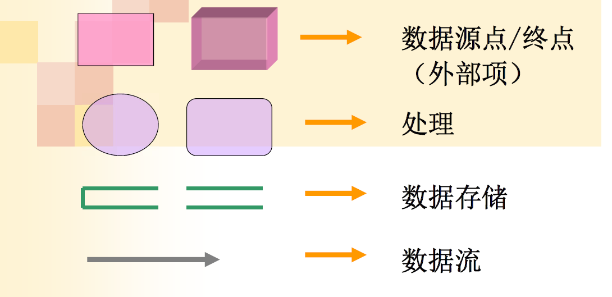
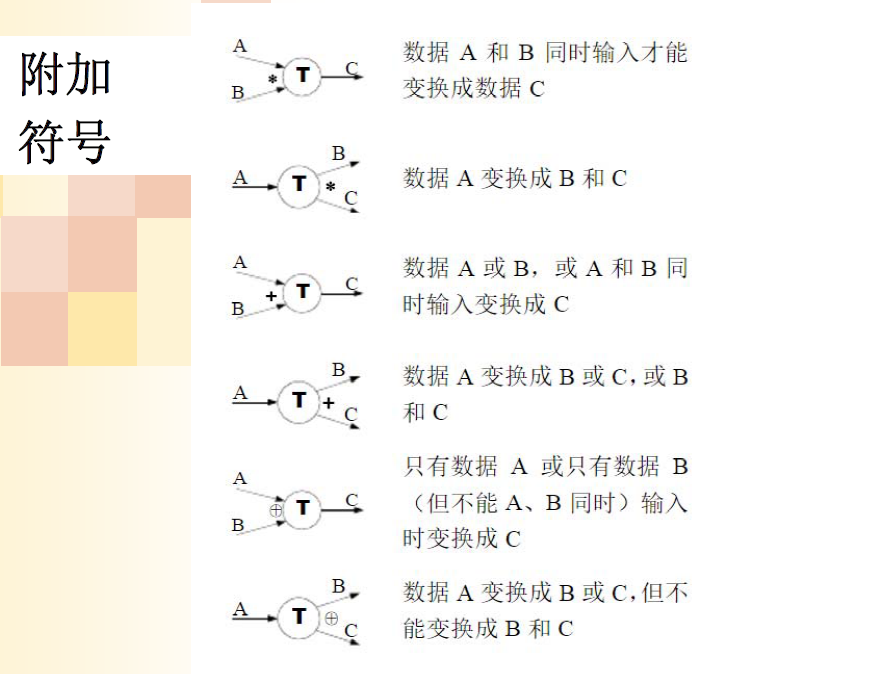
3. DFD的绘制过程
DFD的绘制一般采用自顶向下、逐步细化的方法，主要步骤：
- 明确系统范围。识别出那些不受系统控制但又影响系统运行的外部环境。
- 绘制基本系统模型：基本系统模型由若干源点、终点和一个基本处理组成，表明系统对数据加工变换的基本功能。
- 逐层细化基本系统模型得到功能级DFD和详细DFD。
- 细化原则：
- 分解后的软件成分有相对独立功能
- 一次分解不要加入过多细节，忽略琐碎的枝节，如出错处理等
- 由外向里画DFD
- 细化原则：
4. 用途
- 交流信息的工具：开发人员之间，分析员和用户之间
- 软件分析和设计的工具
- 辅助分析。描述了系统的功能
- 辅助设计。对数据流图划分边界，不同的边界对应不同的系统设计和实现
实现：渐增式，非..的优缺点。什么自顶向下，三明治等等具体内容优缺点
需求分析
软件需求：以一种清晰、简洁、一致且无二义性的方式，描述用户对目标软件系统在功能、行为、性能、设计约束等方面的期望，是在开发过程中对系统的约束。
作用
- 充分理解现实中的业务问题，并作为软件设计的基础；
- 为软件项目的成本、时间、风险估计提供准确的依据；
- 减少开发工作量，避免将时间与资源浪费在设计与实现错误的需求上；
- 通过提供需求文档和需求基线，来有效的管理系统演化与变更；
- 作为顾客与开发团队之间正式合同的一部分；
- 为最终的验收测试提供标准和依据；
分类
**业务需求(Business Requirements)**：客户对于系统的高层次目标要求(highlevel objectives) ，定义了项目的远景和范畴(vision and scope)
- 业务：属于哪类业务范畴？应完成什么功能？为何目的？
- 客户：软件为谁服务？目标客户是谁？
- 特性：区别于其他竞争产品的特性是什么？
- 价值：价值体现在那些方面？
- 优先级：功能特性的优先级次序是什么？
**用户需求(User Requirements)**：用户使用系统必须完成的任务。是从用户角度描述的系统功能需求与非功能需求，通常只涉及系统的外部行为而不涉及内部特性。
**系统需求(System Requirements, SR)**：系统应该提供的功能或服务，通常涉及用户或外部系统与该系统之间的交互，不考虑系统内部的实现细节；
系统需求的类型
- 功能性需求(F)
- 描述了系统所应提供的服务
- 系统与其实现环境之间的交互，输入/输出
- 异常
功能需求可以以不同的详细程度反复编写和细化
功能需求描述应该完整而且一致和准确
- 完整性意味着用户所需的所有的服务应该全部给出描述
- 一致性意味着需求描述不能前后矛盾
- 准确性是指需求不能出现模糊和二义性的地方
- 非功能性需求(URPS)
- 描述了不直接关联到系统功能行为的系统的方方面面。从各个角度对系统的约束和限制，反映了客户对软件系统质量和性能的额外要求，如响应时间、数据精度、可靠性等。
- 可用性(Usability):是一种用户可以学会的操作、输入准备、解释一个系统或者构件输出的状况。
- 可靠性(Reliability):是系统或构件在给定时间内、指定条件下，完成其要求功能的能力。
- 性能(Performance):需求要考虑系统的定量属性，比如响应时间，吞吐量、有效性和准确性。
- 可支持性(Supportability):需求关注于在进行部署后系统的变化状况，比如包括可适配性、可维护性、可移植性等。
分析方法
细化所有的软件功能，找到各元素之间的联系和限制，分析他们是否满足需求，剔除不合理的需求，增加需要补充的部分，最后，给出系统的详细逻辑模型。
- 结构化方法（Structured Analysis, SA）：功能的分析与抽象，自顶向下进行分析
- 面向数据结构的方法
- 面向对象的方法：以对象作为分析问题解决问题的核心
- 形式化软件规格说明技术：通过数学推演和形式化方法严格定义用户需求
结构化分析方法
SA的核心思想是模块化，自顶向下、逐步求精对系统进行分析
使用多个需求分析视图，建立系统的数据、功能和行为模型
- 数据流图DFD（流动和处理）
- 加工说明PSPEC（说明DFD中的每个加工）
- 数据字典DD （DFD中所有元素的定义的集合）
- 状态迁移图STD（软件状态变迁）
- 关联图（外部实体和系统之间的数据流和物流）
- E-R图
需求分析的原则
(1) 必须理解并描述问题的信息域，根据这条 准则应该建立数据模型。
(2) 必须定义软件应完成的功能域，这条准则 要求建立功能模型。
(3) 必须描述作为外部事件结果的软件行为， 这条准则要求建立行为模型。
(4) 必须对描述信息、功能和行为的模型进行 分解，用层次的方式展示细节。
各种图
数据建模—-ERD (Entity- Relationship Diagram)
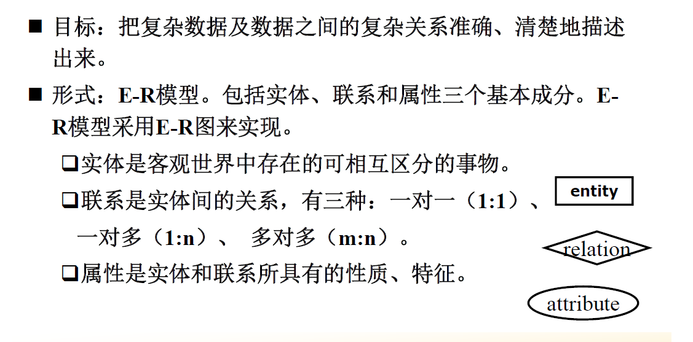
功能建模—数据流图（Data Flow Diagram, DFD）
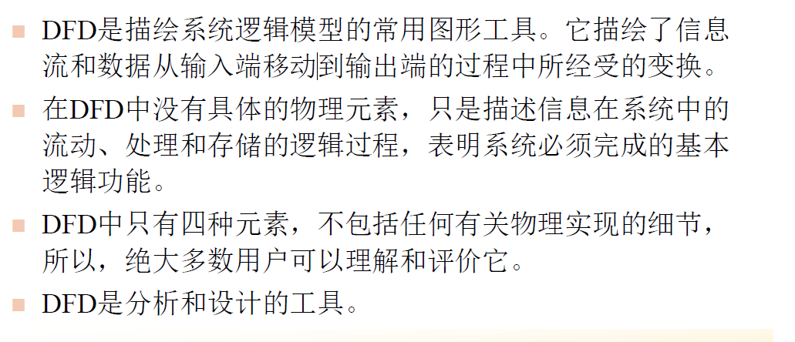
行为建模—状态转换图（State Transition Diagram）
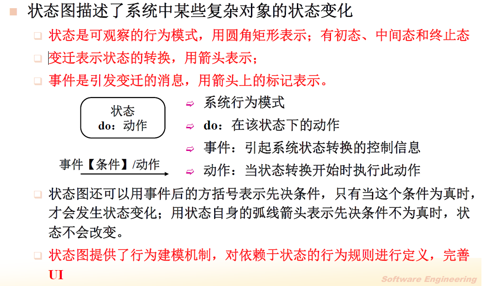
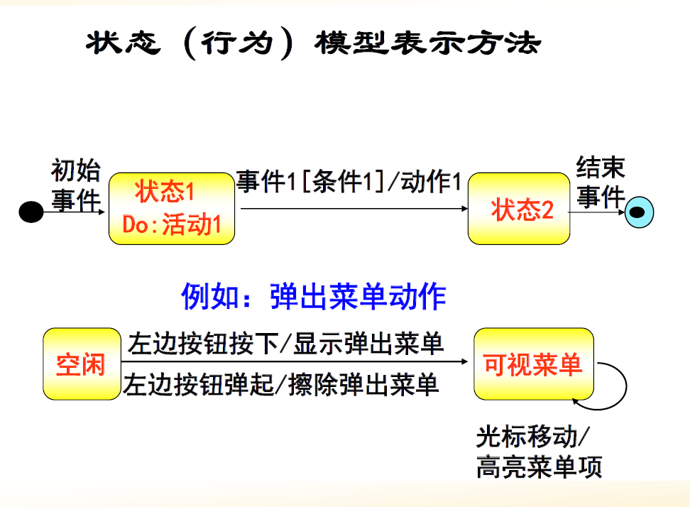
软件设计

模块化
“模块”，又称“构件”，一般指用一个名字可调用 的一段程序。它一般具有如下三个基本属性：
- 功能即指该模块实现什么功能，做什么事情 规定的功能 出错处理 返回一个“结束标志”
- 逻辑：描述模块内部如何实现要求的功能和数据。
- 接口：模块的输入输出
- 状态：该模块运行时的环境和条件。
模块化（modularity）：模块划分，将系统分成若干模块
“模块化”的作用
- 容易设计，使软件结构清晰，易于理解；
- 使软件易于测试和调试，提高可靠性；
- 提高可修改性；
- 有助于软件开发工程的组织管理
模块的重要特征
- 抽象（abstraction）
- 我们在考虑问题时，集中考虑和当前问题有关的方面，而忽略和当前问题无关的方面，这就是抽象。或者说抽象就是抽出事物的本质特性和各类问题的共性，找出联系和相似性，加以概括和提取。
- 处理复杂系统的唯一有效方法。
- 信息隐藏（information hiding）
- 数据隐藏、细节隐藏，黑盒子
- 可理解性
- 修改副作用小
- 错误副作用小
- 局部化：把一些关系密切的软件元素物理地放得彼此靠近
- 模块独立性
模块独立性（Module independence）
好设计的关键： 模块分解的目的是每个模块完成一个相对 独立的子功能，并且与其它模块间的接口 简单。
独立性的度量（Yourdon & Constantine,1978）
- 耦合（Coupling） — 块间联系
- 内聚（Cohesion） — 块内联系
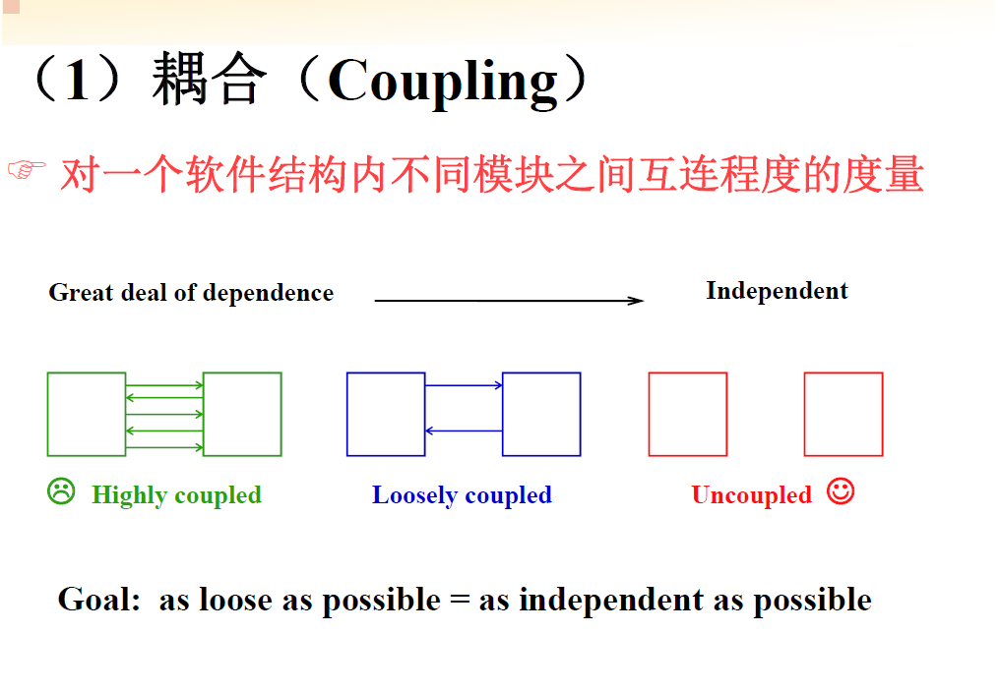
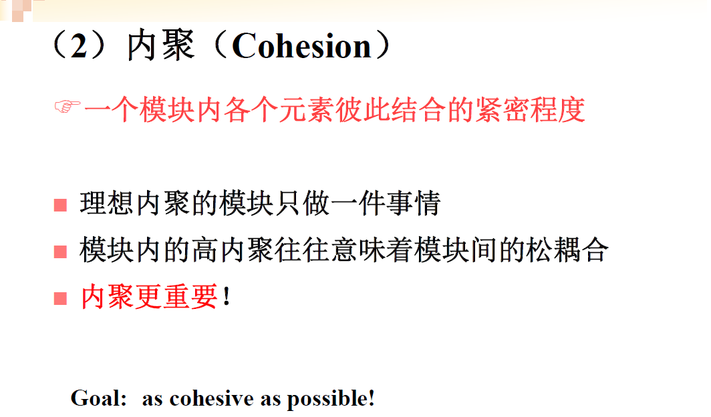
面向数据流的结构化设计方法（SD）
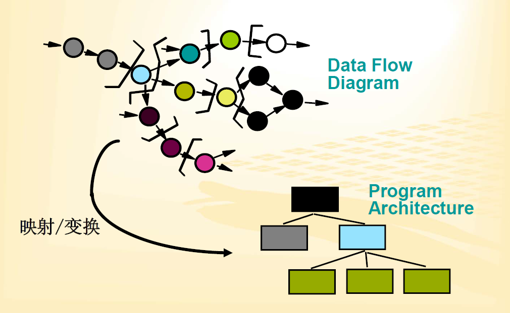
层次图用来描绘软件功能和子功能的层次结构，图中的一个矩形框代表一个模块，方框间的连线表示调用关系而不表示组成关系。
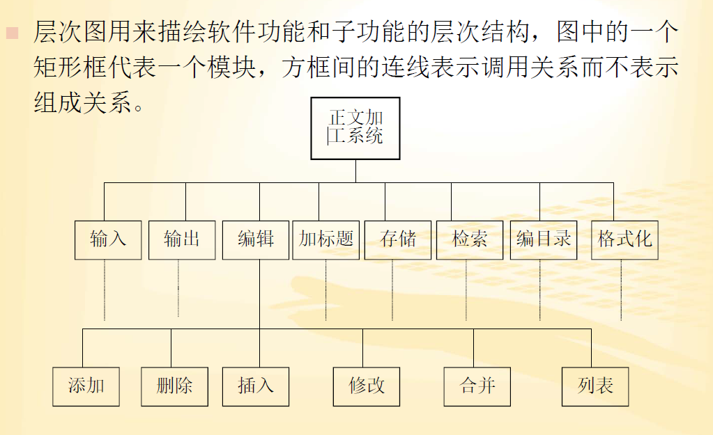
- 结构图（Yourdon提出）是软件结构设计的另一种工具, 与层次图类似。用来确定系统中每个程序是由哪些模块组成的，以及这些模块相互间的关系
- 它在层次图的每一个方框内注明的是模块的名字或主要功能。
- 方框之间的直线表示模块的调用关系。
- 用带注解的箭头表示模块调用过程中传递的信息。
基于数据流（ SD ）的设计方法
- 又称为结构化设计方法；
- 目标：给出设计软件结构的一个系统化途径；
- 作用：该方法定义了一些不同的“映射”，利用这些映射可以把数据流图变换成软件结构。
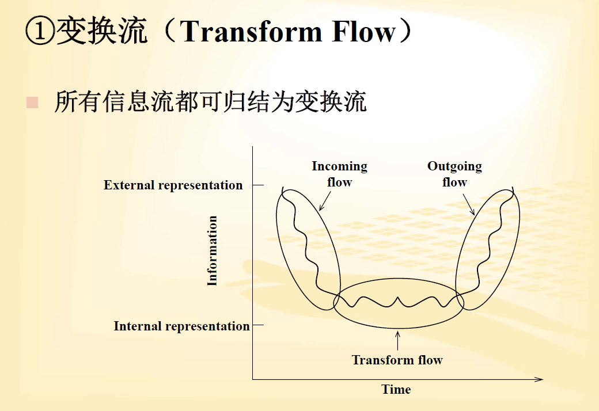
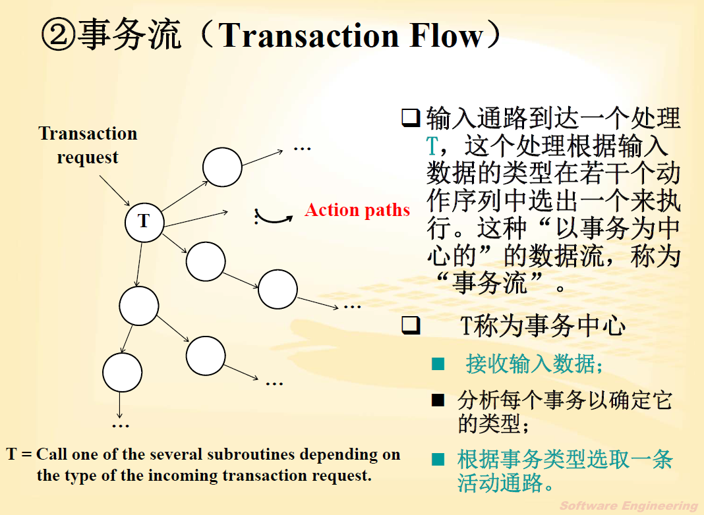
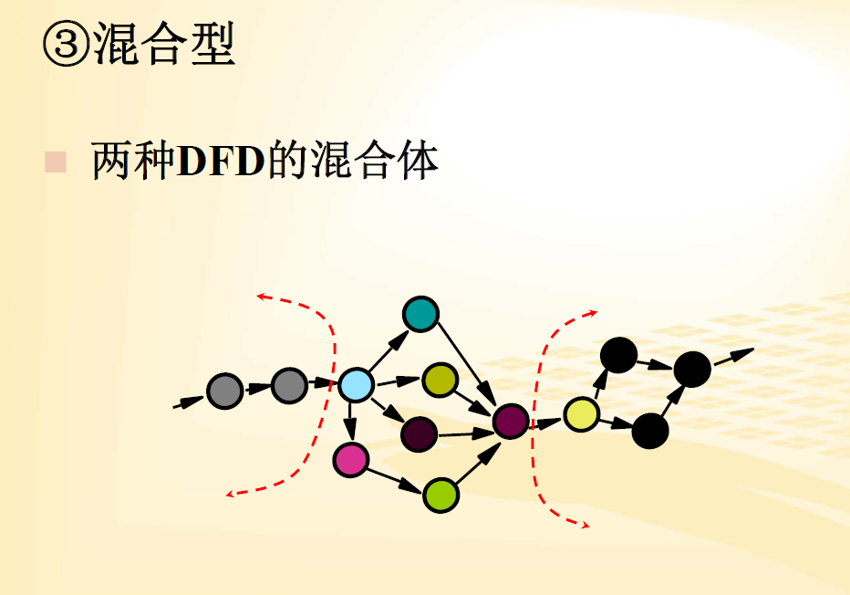
分层DFD的映射
- 对于一个复杂问题的DFD，往往是分层的。分层的DFD映射成SC图也应该是分层的，这样便于设计，也便于修改。
面向数据结构的分析方法
- 软件系统本质上是信息处理系统，以信息对象及其操作为核心进行需求分析。
- 认为复合信息对象具有层次结构，并且可按顺序、选择、重复三种结构分解为成员信息对象。
- 提供将层次信息结构映射为程序结构的机制，从而为软件设计奠定较好的基础。
面向对象分析方法
OOA的核心思想是利用OO的概念和方法对软件需求 建造模型，以使用户需求逐步精确化、一致化、完全化。
测试
黑盒测试 —— 功能测试
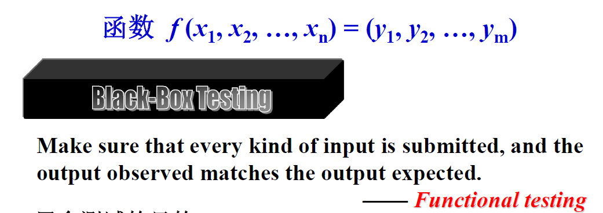
黑盒测试的目：
- 功能是否正常使用？
- 输入 → 正确输出？
- 保持外部信息的完整性？
- 时机：测试 的后期，如集成测试、确认测试
白盒测试
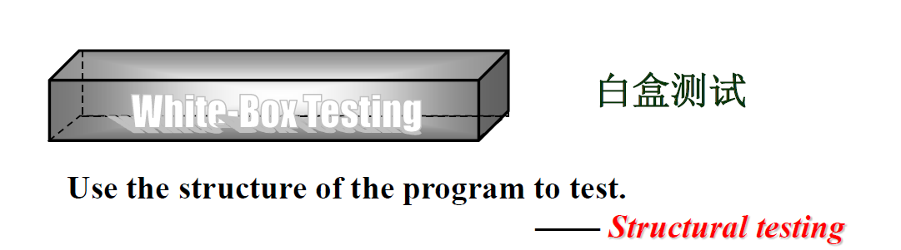
- 关注软件内部逻辑结构 （control structure）
- 测试每条逻辑通路
- 检查断点（ break point break point break point ）状态
- 测试方案对程序逻辑的覆盖程度决定测试的完全性程度
- 时机：测试的早期，例如：单元测试
- 成本高，通常对结构比较复杂的模块进行白盒测试
维护
定义：就是在软件已经交付使用之后，因为下列原因而修改软件的过程。
- 软件中的bug需要修复——改正性维护（corrective maintenace）
- 软件在使用过程中，应用户要求扩充一些在分析和设计阶段中没有规定的功能和性能——完善性维护（perfective maintenance）
- 商业环境在不断地变化、计算机硬件和软件环境的升级需要更新现有的系统——适应性维护（adaptive maintenance）
- 为了改进系统的可靠性和可维护性，为适应将来的变化而进行的自主性的改进——预防性维护（preventive maintenace）
最后更新： 2021年07月15日 09:25